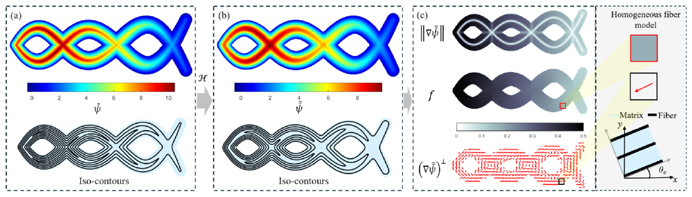
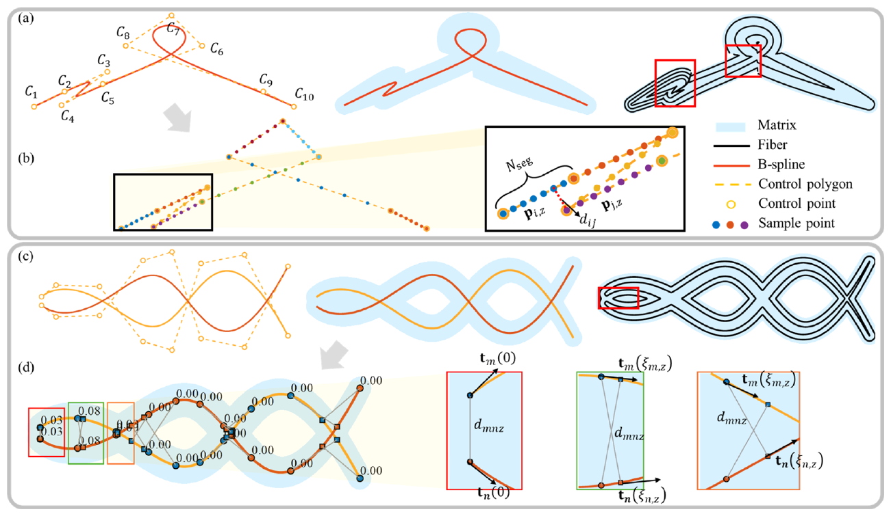
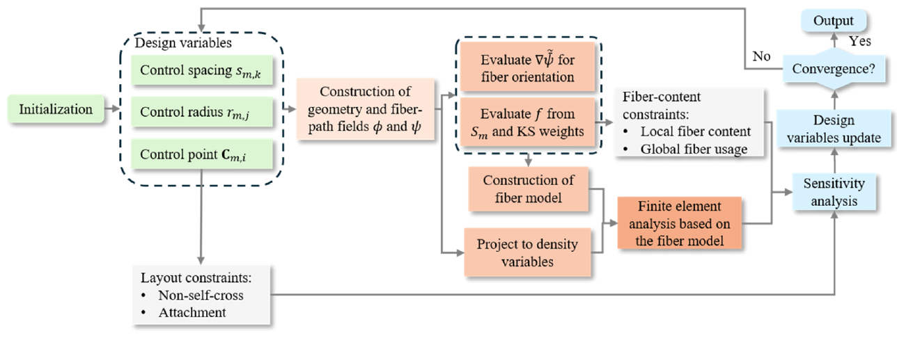
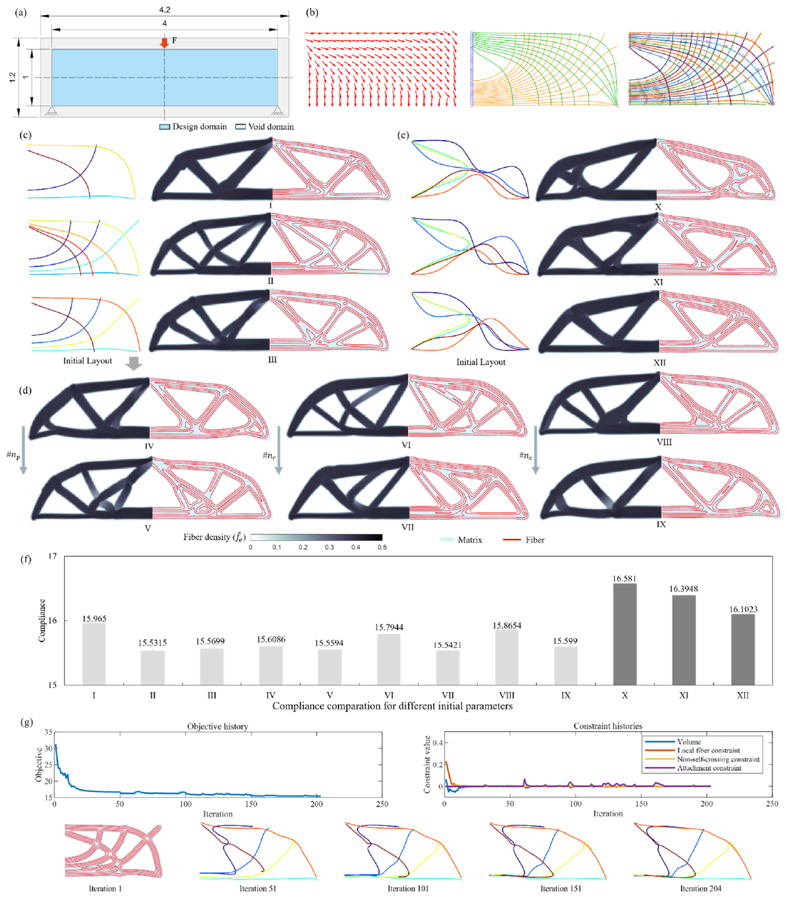
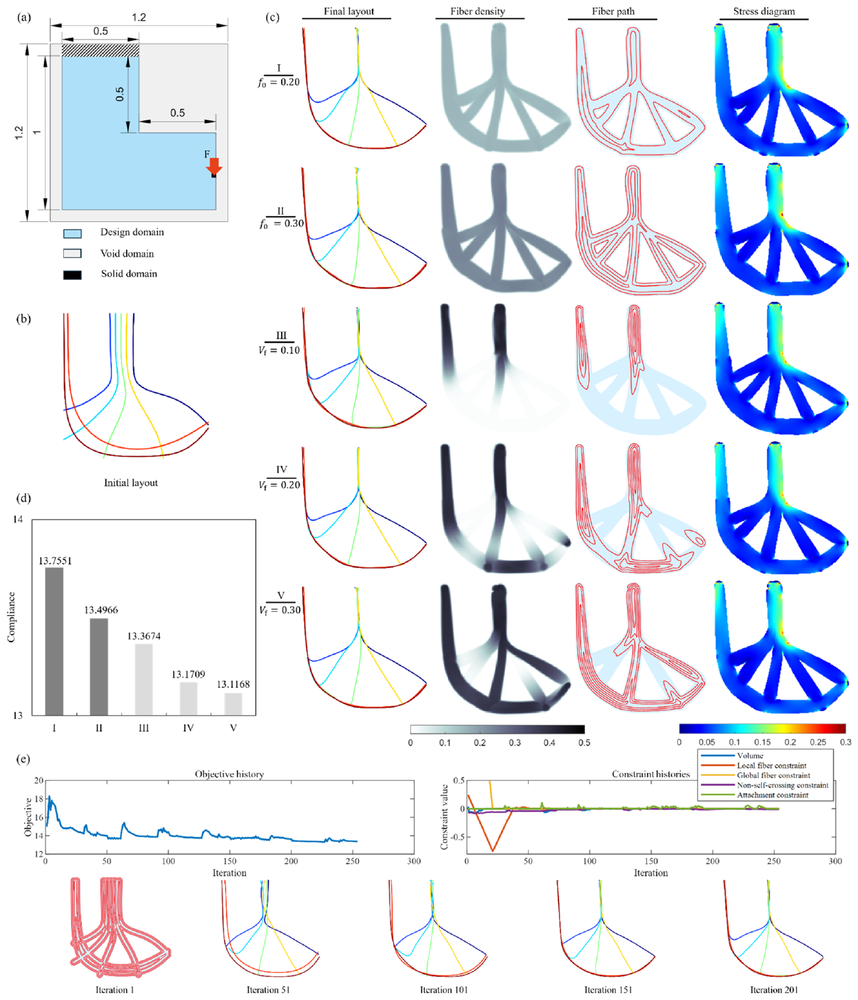
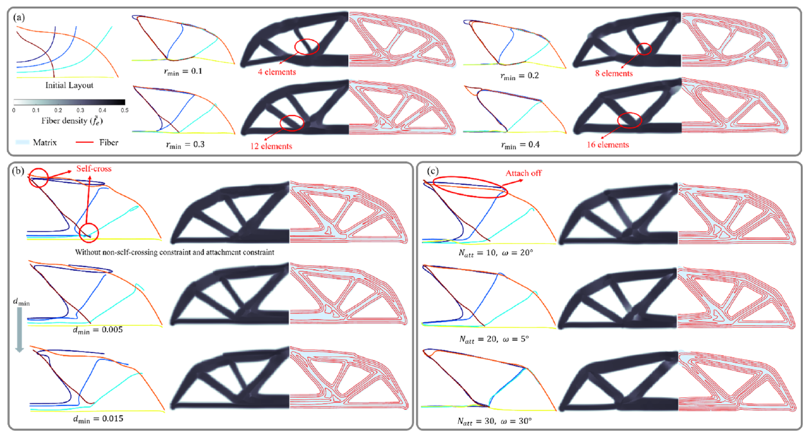
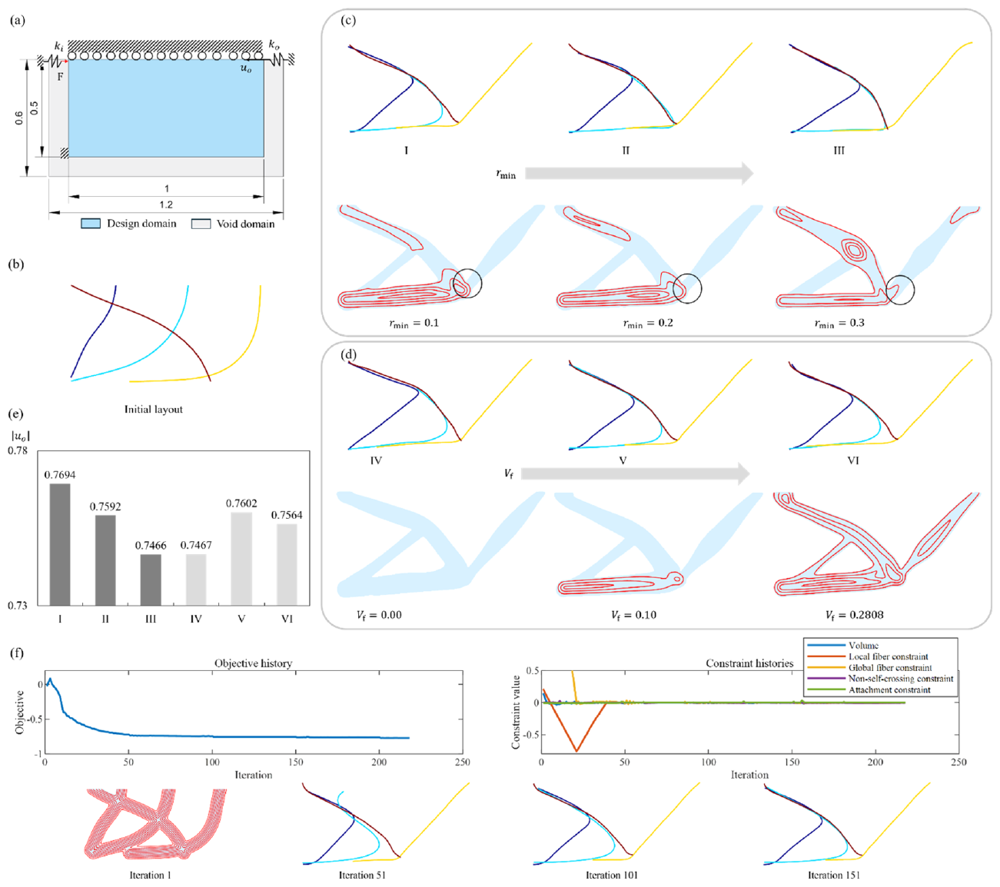
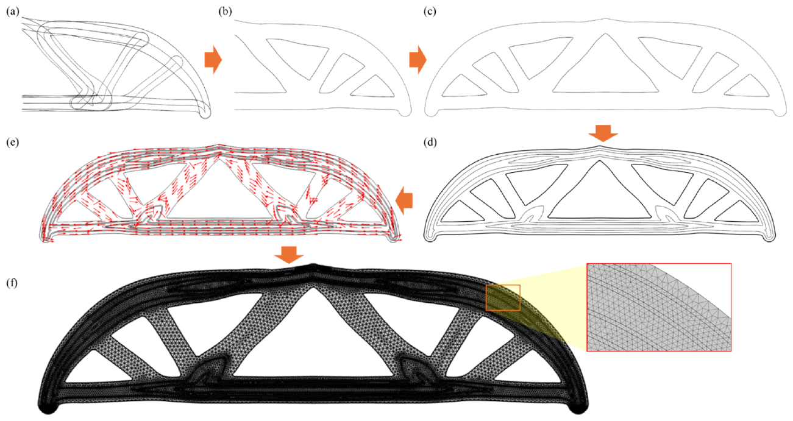

Variable-width components provide compact topology control and direct CAD compatibility.
Computer Methods in Applied Mechanics and Engineering - 2026
Topology optimization of additively manufactured continuous fiber-reinforced composites using B-spline components
A geometry-driven framework that concurrently optimizes structural topology, continuous fiber paths, path spacing, and fiber usage for additively manufactured composites.
1 Department of Mechanical Engineering, The University of Tokyo, Japan
2 Department of Mechanical Engineering, The University of Osaka, Japan
3 School of Mechanical Engineering, Shandong University, China
* Corresponding authors
Abstract
This work proposes a B-spline-driven topology and fiber-path optimization framework for continuous fiber-reinforced composites. Multiple variable-width B-spline components represent the structural layout, while continuous fiber paths are generated as iso-contours of the component-induced scalar field. A separate spacing-control field enables local adjustment of fiber density and global control of fiber usage. Non-self-crossing, attachment, and fiber-content constraints improve path continuity and manufacturability. The optimized direction and fiber-density indicators are mapped to homogenized orthotropic material properties, and adjoint sensitivities are derived for all parametric variables.
Printable trajectories are extracted directly from iso-contours of the optimized scalar field.
Local spacing and global fiber usage are adjusted within the same optimization framework.
Geometric constraints prevent self-crossing and promote coherent component attachment.
Method
Each component contains a B-spline centerline, a variable radius field, and a spacing-control field. Their assembled scalar field defines the structural boundary and the continuous fiber trajectories. The local tangent direction and an analytically evaluated fiber-density indicator are then coupled with a homogenization-based constitutive model. The complete formulation optimizes geometry, reinforcement paths, and material allocation using a shared set of design variables.



Numerical Results
MBB-beam, L-bracket, and compliant-mechanism benchmarks evaluate initialization, minimum feature size, component manufacturability, local fiber density, and global fiber usage. The examples show that the framework produces smooth structural skeletons together with continuous reinforcement paths and controllable spacing.




Full-Scale Reconstruction and Verification
The explicit B-spline representation allows optimized boundaries to be reconstructed as CAD geometry without complex topology-repair procedures. Full-scale finite-element models retain the resolved matrix and fiber paths to assess the mechanical effectiveness of the optimized reinforcement. Stiffness-oriented cases substantially reduce both maximum and average displacement, while the compliant-mechanism study confirms that excessive fiber coverage can over-stiffen the structure.
- Redundant internal curves are removed before the optimized boundary is reconstructed.
- The explicit geometry is mirrored and converted into a complete CAD model.
- Resolved fiber trajectories are transferred to the full-scale finite-element verification model.
- Fiber allocation can be tailored to either stiffness or compliant-motion requirements.

Citation
@article{guo2026bsplinefiber,
title = {Topology optimization of additively manufactured continuous
fiber-reinforced composites using B-spline components},
author = {Guo, Yifan and Liu, Jikai and Xu, Shuzhi and Yaji, Kentaro
and Yamada, Takayuki},
journal = {Computer Methods in Applied Mechanics and Engineering},
volume = {461},
pages = {119224},
year = {2026},
doi = {10.1016/j.cma.2026.119224}
}
Acknowledgements
This work was supported in part by JSPS KAKENHI Grant Numbers JP23H03800, JP25H01108, and 25KF0244.